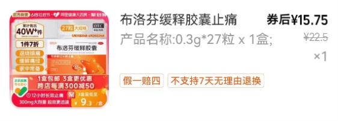
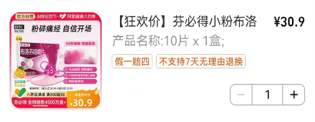
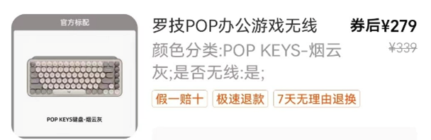
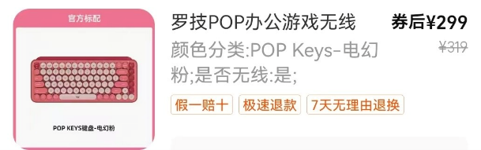
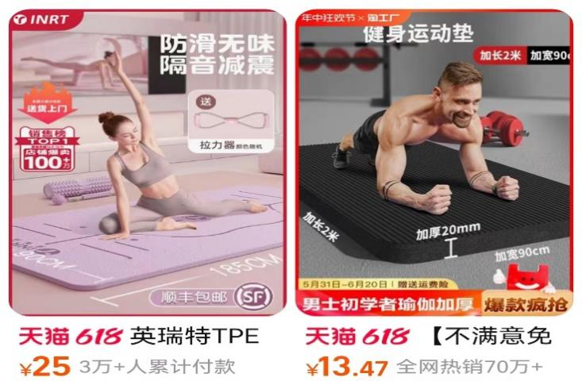
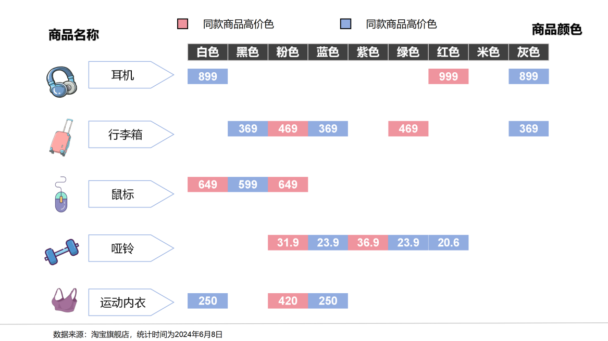
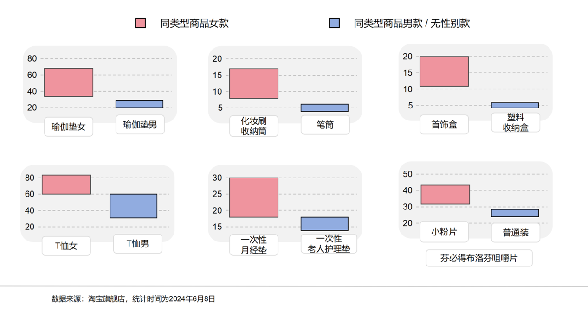

不只是同款产品的不同颜色，相同功能的同类型产品之间也可能暗藏粉红税。同样一张瑜伽垫 ，在网购平台搜“瑜伽垫女”就比“瑜伽垫男”贵个几倍。很多以女性为主要目标客户群的商品往往只是其他廉价产品的变形或再包装。比如化妆刷收纳桶的价格总是高于相同容量的笔筒价格，塑料零件收纳盒的价格总是高于相同收纳格数的首饰盒；一次性产褥垫价格总是高于差别不大的一次性老人护理垫 …
布洛芬咀嚼片
布洛芬咀嚼片作为缓解疼痛的药品被大家所熟知，下图 两款布洛芬咀嚼片名称相同、功效相同、成分相同，只是包 装款式从男性人像变为了女性人像 ，颜色换成粉色，宣传重点变为女性“痛经专用”，前者便远贵于后者。


键盘
在刻板印象中，喜欢购买电子产品的男性要多于女性，但事实上电子产品也是“粉红税”的重灾区，相同款式的键盘，粉色的价格总是高于黑色。


瑜伽垫
同样一张瑜伽垫，相同的功用和材质，在网购平台搜“瑜伽垫女”就比“瑜伽垫男”贵十元。

根据数据统计发现，同型号商品中，粉色、紫色、米色等“女性刻板色”的平均标价比黑色、蓝色、灰色等“男性刻板色”平均溢价一成到七成不等。

根据数据统计，超过四成的商品女性款比男性款更贵，而瑜伽垫、T恤等男款价格高于女款的产品仅占所有受 调查商品的18%。
